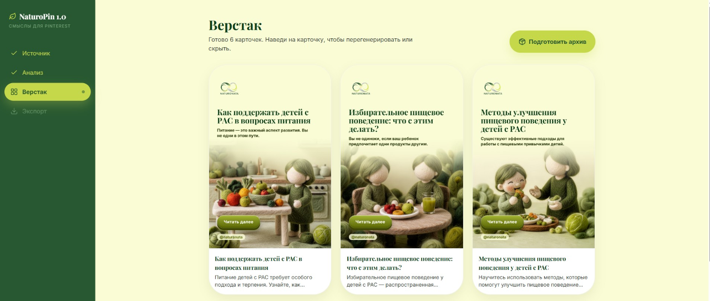

Твоя статья → пак экспертных Pinterest-карточек за минуты — без Canva и без AI-мусора
Вставь ссылку на статью или сам текст — методист прочитает материал, выделит главное и соберёт 8–15 карточек: чек-листы, памятки, алгоритмы. Кириллица всегда без ошибок, голос и терминология — твои. Ты проверяешь и правишь каждую карточку перед скачиванием.

Реальный экран приложения — не мокап
Знакомо?
Ты пишешь статью вечером, когда сын наконец уснул — а потом ещё час убиваешь на визуал в Canva, потому что «без картинки в Pinterest никто не увидит». Каждая карточка — это торг между «сделать красиво» и «наконец лечь спать». 8–10 часов в неделю уходит не на консультации и не на отдых — на подбор шрифтов и рамочек.
Ты уже пробовала AI-генераторы — и разочаровалась: шаблонные картинки, которые не передают глубину твоей темы, кривая кириллица, «AI-мусор», под которым стыдно подписаться своим именем.
Пока дизайн тянется вручную, контент выходит нерегулярно — а каждая неделя без стабильного потока пинов это упущенные заявки на консультации, которые сейчас получает кто-то другой в твоей нише.
NaturoPin — не генератор картинок, а методист, который бережно упаковывает твою экспертизу
Вставляешь статью → система выделяет ключевые мысли, чек-листы и алгоритмы → собирает их в сенсорно-чистые образовательные карточки, которые выглядят как твоя работа, а не как AI-шаблон.
После — ты правишь текст и скачиваешь пак за те же пару минут, которые раньше уходили на поиск идеи для одной картинки в Canva.
Три шага — от статьи до готового пака
Вставь статью
Ссылку или сам текст. Методист сам прочитает и разложит на смыслы — чек-листы, инструкции, советы.
Проверь и поправь
На Верстаке видно все карточки: заголовок, хук, картинка. Правишь текст прямо на месте — ничего не уходит без твоего согласия.
Скачай пак
ZIP с готовыми PNG и файлом метаданных для Pinterest. Публикуешь сама и когда сама решишь.
Что это меняет в твоей неделе
Возвращаешь себе вечера
Пак из 8–15 карточек готов за минуты вместо 8–10 часов в неделю в Canva.
Не боишься «AI-мусора»
Войлочный фон без текста, а сам текст кладётся кодом — кириллица без ошибок, дизайн выглядит как работа специалиста, а не трендовый шаблон.
Сохраняешь свой голос
Терминология и тон — твои, не шаблонный переписанный текст.
Держишь полный контроль
Ничего не публикуется автоматически — правишь и скачиваешь сама, когда готова.
Разнообразие форматов
Чек-листы, памятки, алгоритмы, карточки ошибок и советов — не один и тот же шаблон 15 раз подряд.
Осталось 7 мест в закрытой бете
Оставить заявкуУже проверено на живых экспертах
Четыре человека прошли путь от статьи до карточек и оставили честную обратную связь — не «пять из пяти» на камеру, а то, что реально сказали.
«По цветовой палитре приятный интерфейс, Проверка — Одобрить — В черновик»
«Привычный вид, понятная навигация»
«Дизайн очень симпатичный»
Понравились «варианты картинок»
Отзывы собраны на раннем прототипе в июле 2026 — до части доработок. Тест показал и шероховатости: их чиним, поэтому мест в бете пока семь, а не сто.
Что входит, когда ты в деле
- Пак из 8–15 карточек с каждой присланной статьи.
- Правки заголовка и хука прямо на карточке, без новой генерации.
- Экспорт ZIP: PNG + файл метаданных, готовый для Pinterest.
- Личный онбординг от автора — помогу пройти первый пак.
Сейчас доступ — бесплатно, по заявке
Ты оставляешь контакт → автор лично выдаёт код доступа.
Без автосписаний, без привязки карты.
Частые вопросы
Это точно бесплатно? +
Да. Сейчас доступ выдаётся вручную по заявке, без оплаты. Если когда-нибудь появится платный тариф — предупредим заранее, никаких скрытых списаний.
Сколько времени займёт освоение? +
Обычно первый пак получаешь за один присест: вставила статью → пара минут правок на Верстаке → скачала. Обучение не требуется.
А если результат не подойдёт под мой стиль? +
Ты видишь и правишь каждую карточку перед скачиванием — ничего не публикуется автоматически. Не подошла карточка — просто не скачивай именно её.
Чем это лучше того, что я делаю в Canva сейчас? +
В Canva макет каждой карточки придумываешь с нуля. Здесь методист уже разложил статью на смыслы и подобрал формат — тебе остаётся поправить текст, а не рисовать заново.
Меня не забанят за автоматизацию? +
Инструмент не публикует и не постит в Pinterest сам — ты получаешь готовые файлы и выкладываешь их вручную, как обычно. Автопостинга через API здесь нет и не будет — это сознательное решение.
Твоя статья → пак экспертных Pinterest-карточек за минуты — без Canva и без AI-мусора
Оставь контакт — пришлю код доступа и помогу собрать первый пак. Осталось 7 мест.